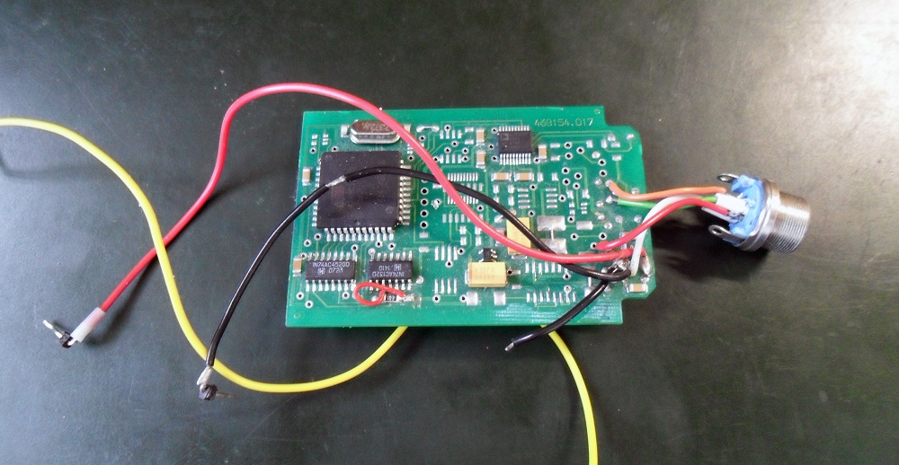
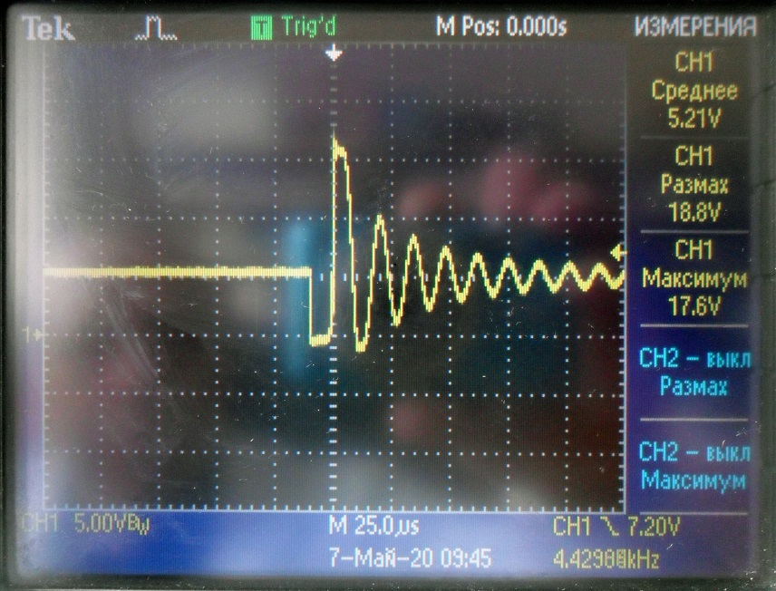
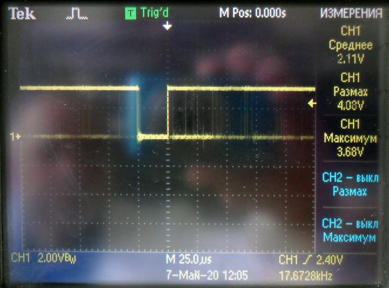

БДКН-05. Проверка плат
Берем плату для проверки плат БДКН
Проверка плат преобразователя напряжения 436121.017
- Подключить
- 4 - Земля (черный)
- 5 - +5В (красный)
- 3 - +3,3В (желтый)
- 2 - +3,3В (желтый)
- Проверяем напряжение на транзисторе VT1-VD2. Должна быть такая амплитуда и форма 
- Проверяем напряжение на делителе. Должно быть около 18В
Проверка плат преобразователя импульсов 468741.022
- Подключить
- 5 - Земля
- 7 - +3,3В
- 6 - +5В
- Проверяем напряжения в точках. Удобнее использовать осциллограф
| Точка | Напряжение |
|---|---|
| D2.3 | 2.66 |
| VT3 C17 | -2.66 |
| T.10 D4.7 | 1 |
| D9.3 | 1.88 |
| D8.7 | 0.09 |
| D5.1 | 5 |
| D7.1 | -5 |
Проверка плат устройства обработки 468154.036
- Подключить
- 5 - +6В
- 4 - Земля
- 3 - +3.3В
- в точке D6.8 осциллографом смотрим сигнал, при подаче на точку 9 сигнала, должен появиться импульс 25мкС 